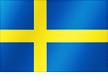

- ㄱ0
- ㄴ1
- 나이지리아
피파랭킹 : 48위
지난성적 : 러시아 월드컵 예선기록 4승 1무 1패, 최고성적 16강(1994, 1998, 2014년), 우승횟수 0회, 이전 월드컵 16강
- ㄷ3
-
대한민국
피파랭킹 : 57위
지난성적 : 러시아 월드컵 예선기록 4승 3무 3패, 최고성적 4위(2002년), 우승횟수 0회, 이전 월드컵 본선진출
-
덴마크
피파랭킹 : 12위
지난성적 : 러시아 월드컵 예선기록 6승 2무 2패, 최고성적 8강(1998년), 우승횟수 0회, 이전 월드컵 미진출
-
 독일
피파랭킹 : 1위
독일
피파랭킹 : 1위
지난성적 : 러시아 월드컵 예선기록 10승 0무 0패, 최고성적 우승(1954, 1974, 1990, 2014년), 우승횟수 4회, 이전 월드컵 우승
- ㄹ1
-
러시아
피파랭킹 : 70위
지난성적 : 러시아 월드컵 개최국, 최고성적 4위(1966년), 우승횟수 0회, 이전 월드컵 본선진출
- ㅁ2
-
 멕시코
피파랭킹 : 15위
멕시코
피파랭킹 : 15위
지난성적 : 러시아 월드컵 예선기록 6승 3무 1패, 최고성적 8강(1970, 1986년), 우승횟수 0회, 이전 월드컵 16강
-
모로코
피파랭킹 : 41위
지난성적 : 러시아 월드컵 예선기록 3승 3무 0패, 최고성적 16강(1986년), 우승횟수 0회, 이전 월드컵 미진출
- ㅂ2
-
브라질
피파랭킹 : 2위
지난성적 : 러시아 월드컵 예선기록 12승 5무 1패, 최고성적 우승(1958, 1962, 1970, 1994, 2002년), 우승횟수 5회, 이전 월드컵 4위
-
 벨기에
피파랭킹 : 3위
벨기에
피파랭킹 : 3위
지난성적 : 러시아 월드컵 예선기록 9승 1무 0패, 최고성적 4위(1986년), 우승횟수 0회, 이전 월드컵 8강
- ㅅ5
-
사우디아라비아
피파랭킹 : 67위
지난성적 : 러시아 월드컵 예선기록 6승 1무 3패, 최고성적 16강(1994년), 우승횟수 0회, 이전 월드컵 미진출
-
세네갈
피파랭킹 : 27위
지난성적 : 러시아 월드컵 예선기록 4승 2무 0패, 최고성적 8강(2002년), 우승횟수 0회, 이전 월드컵 미진출
-
스웨덴
피파랭킹 : 24위
지난성적 : 러시아 월드컵 예선기록 6승 1무 3패, 최고성적 2위(1958년), 우승횟수 0회, 이전 월드컵 미진출
-
세르비아
피파랭킹 : 34위
지난성적 : 러시아 월드컵 예선기록 6승 3무 1패, 최고성적 4위(1930, 1962년), 우승횟수 0회, 이전 월드컵 미진출
-
스위스
피파랭킹 : 6위
지난성적 : 러시아 월드컵 예선기록 9승 0무 1패, 최고성적 8강(1934, 1938, 1954년), 우승횟수 0회, 이전 월드컵 16강
-
스페인
피파랭킹 : 10위
지난성적 : 러시아 월드컵 예선기록 9승 1무 0패, 최고성적 우승(2010년), 우승횟수 1회, 이전 월드컵 본선진출
- ㅇ7
-
아르헨티나
피파랭킹 : 5위
지난성적 : 러시아 월드컵 예선기록 7승 7무 4패, 최고성적 우승(1978, 1986년), 우승횟수 2회, 이전 월드컵 2위
-
아이슬란드
피파랭킹 : 22위
지난성적 : 러시아 월드컵 예선기록 7승 1무 2패, 최고성적 첫진출(2018년), 우승횟수 0회, 이전 월드컵 미진출
-
우루과이
피파랭킹 : 14위
지난성적 : 러시아 월드컵 예선기록 9승 4무 5패, 최고성적 우승(1930, 1950년), 우승횟수 2회, 이전 월드컵 16강
-
이란
피파랭킹 : 37위
지난성적 : 러시아 월드컵 예선기록 6승 4무 0패, 최고성적 본선진출(1978, 1998, 2006, 2014년), 우승횟수 0회, 이전 월드컵 본선진출
-
이집트
피파랭킹 : 45위
지난성적 : 러시아 월드컵 예선기록 6승 4무 0패, 최고성적 본선진출(1978, 1998, 2006, 2014년), 우승횟수 0회, 이전 월드컵 본선진출
-
 일본
피파랭킹 : 61위
일본
피파랭킹 : 61위
지난성적 : 러시아 월드컵 예선기록 6승 2무 2패, 최고성적 16강(2002, 2010년), 우승횟수 0회, 이전 월드컵 본선진출
-
잉글랜드
피파랭킹 : 12위
지난성적 : 러시아 월드컵 예선기록 8승 2무 0패, 최고성적 우승(1966년), 우승횟수 1회, 이전 월드컵 본선진출
- ㅈ0
- ㅊ0
- ㅋ3
-
코스타리카
피파랭킹 : 23위
지난성적 : 러시아 월드컵 예선기록 4승 4무 2패, 최고성적 8강(2014년), 우승횟수 0회, 이전 월드컵 8강
-
콜롬비아
피파랭킹 : 16위
지난성적 : 러시아 월드컵 예선기록 7승 6무 5패, 최고성적 8강(2014년), 우승횟수 0회, 이전 월드컵 8강
-
크로아티아
피파랭킹 : 20위
지난성적 : 러시아 월드컵 예선기록 6승 2무 2패, 최고성적 3위(1998년), 우승횟수 0회, 이전 월드컵 본선진출
- ㅍ4
-
파나마
피파랭킹 : 55위
지난성적 : 러시아 월드컵 예선기록 3승 4무 3패, 최고성적 첫진출(2018년), 우승횟수 0회, 이전 월드컵 미진출
-
포르투갈
피파랭킹 : 4위
지난성적 : 러시아 월드컵 예선기록 9승 0무 1패, 최고성적 3위(1966년), 우승횟수 0회, 이전 월드컵 본선진출
-
 폴란드
피파랭킹 : 8위
폴란드
피파랭킹 : 8위
지난성적 : 러시아 월드컵 예선기록 8승 1무 1패, 최고성적 3위(1974, 1982년), 우승횟수 0회, 이전 월드컵 미진출
-
프랑스
피파랭킹 : 7위
지난성적 : 러시아 월드컵 예선기록 7승 2무 1패, 최고성적 우승(1998년), 우승횟수 1회, 이전 월드컵 8강
- ㅌ0
- ㅎ1
-
호주
피파랭킹 : 36위
지난성적 : 러시아 월드컵 예선기록 5승 4무 1패, 최고성적 16강(2006년), 우승횟수 0회, 이전 월드컵 본선진출
Copyright © 2018년 분산컴퓨팅 기말프로젝트
2018 러시아 월드컵 안내 - 20130953 이진규